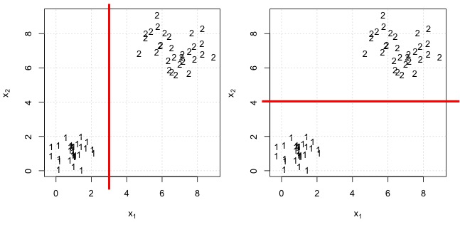
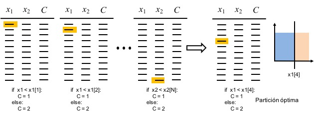
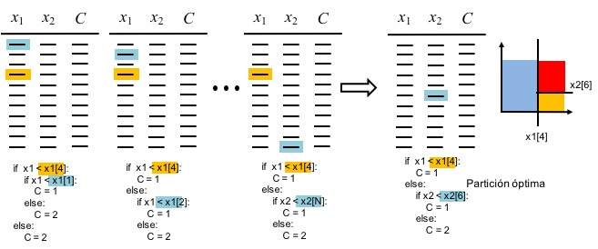

Árboles de Clasificación¶
45 min | Ultima modificación: Junio 22, 2019
En los tutoriales anteriore se han venido abordando diferentes algoritmos para resolver problemas de clasificación. En primer lugar, se abordo el algoritmo 1R que genera una frontera de decisión que es paralela a uno de los ejes coordenados. Luego se bordo el algoritmo KNN que asigna la clase con base en las clases de los k vecinos más cercanos. En este tutorial se abordarán los árboles de clasificación, los cuales pueden producir una partición compleja del espacio de entrada para realizar la clasificación.
Descripción del problema¶
Se desea determinar a cuál clase (\(A\), \(B\), \(C\)) pertenece un elemento, a partir de resultados previamente recolectados.
Se tiene una muestra de 16 ejemplos para los cuales se han medido sus características \(x_1\) y \(x_2\) y su respectiva clase. Los puntos son presentados en la siguiente figura. Los puntos rojos representan la clase A, los azules la B, y finalmente, los grises la C.

Se desea determinar a que clase pertenece un nuevo punto con coordenadas \(x_1\) y \(x_2\).
[1]:
%%writefile data.tsv
x1 x2 y
1 1 A
1 2 A
1 3 A
1 4 A
2 1 A
2 2 B
2 3 B
2 4 A
3 1 C
3 2 B
3 3 B
3 4 A
4 1 C
4 2 C
4 3 C
4 4 B
Overwriting data.tsv
Metodología¶
La metodología de árboles de decisión se basa en la partición del espacio de entrada (las variables o características medibles) en regiones buscando separar en cada región un grupo de elementos que pertenecen a una clase particular. En la siguiente figura se tienen dos clases separables en un espacio de dos dimensiones (\(x_1\) y \(x_2\)); haciendo la analogía con el problema real, los 1 podrían representar la clase A y los 2 las demás clases. En general, en un árbol de decisión se busca encontrar fronteras lineales paralelas a los ejes que permitan clasificar correctamente los datos. Para este ejemplo (figura izquierda), se podría decir que:
Pero igualmente, es posible decir que (figura derecha):

Note que cada una de los dos regiones obtenidas puede seguir particionándose cuanto sea necesario. Este procedimiento se conoce como particionamiento recursivo y permite generar varias subregiones como las presentadas a continuación.

La figura anterior (izquierda) puede interpretarse como un conjunto de reglas if anidadas:
if x2 > C then
class = azul
else
if x1 < A then
class = verde
else
if x2 < B then
class = rojo
else
class = amarillo
end if
end if
end if
Y estas reglas se pueden interpretar como el árbol de decision que aparece en la misma figura. Para decidir que región asignar a un nuevo punto (\(x_1\), \(x_2\)) simplemente se recorre el árbol de decisión usando los valores \(x_1\) y \(x_2\).
Algoritmo recursivo de particionamiento¶
El algoritmo de particionamiento opera de la siguiente manera. Se tienen únicamente dos atributos \(x_1\) y \(x_2\), y un total de \(N\) ejemplos para construir el árbol. Para construir la primera instancia, se construyen todos los árboles posibles de profunidad 1 (un nodo). El primer árbol se construye usando como frontera de decisión el primer valor de \(x_1\) en la muestra del ejemplo (véase la figura de abajo); el segundo árbol se construye con el segundo valor, y así sucesivamente. Una vez se recorren todos los valores de \(x_1\), se recorren todos los valores de \(x_2\) y así sucesivamente hasta agotar todas las variables explicativas (atributos).

La mejor partición se escoje como aquella que clasifica el mayor número de ejemplos correctamente (o una métrica equivente) y se obtiene un primer árbol. Esto equivale a encontra la mejor partición de todo el espacio de características en dos regiones que clasifiquen de mejor forma los ejemplos usandos para el entrenamiento del modelo (véase la parte derecha de la figura anterior). En la figura anterior, se supone que la mejor clasificación se obtiene usando como punto de corte el dato
x1[4].
El algoritmo continua obteniendo una tercera región y para ello se debe decidir cuál de las dos regiones existentes se parte y en que orientación va dicho corte. El algoritmo prueba nuevamente cada punto del conjunto de datos como punto de corte de la siguiente manera: se hace x1[1] el nuevo punto de corte; si x1[1] está a la izquierda de x1[4], se esta partiendo dicha región y por lo tanto se agrega esta nueva partición en la parte correspondiente de la regla (primera partición de
la figura de abajo). Se hace x1[2] el nuevo punto de corte; si se asume que x1[2] esta a la derecha de x1[4] entonces se agrega a la parte else del modelo óptimo; se procede así sucesivamente hasta hasta obtener todos los modelos posibles con dos cortes. Asumiendo que el mejor corte se obtiene para x2[6], el árbol queda como se presenta en el conjunto de reglas de la parte derecha de la siguiente figura.

El proceso continua agregando un tercer corte, luego un cuarto y así sucesivamente. De ahí que el proceso se conozca como particionamiento recursivo.
Nótese que el proceso puede realizarse hasta que se asigne una región única a cada uno de los datos, lo que resulta erróneo ya que el modelo simplemente memoriza la información usada para el entrenamiento (explique que es esto!). El proceso de crecimiento del árbol de decisión puede deternerse asignando un máximo a la profundidad del árbol (early stoping) o limitando la cantidad mínima de puntos que puede contener una región (pre-pruning).
Actividad.— ¿Cómo se modifica el algoritmo descrito para introducir como restricción la cantidad mínima de puntos que debe tener una región?
Actividad.— ¿Cómo opera el algoritmo cuando las variables son categóricas?
Otra forma es permitir el crecimiento del árbol y luego proceder a reducir su tamaño eliminando regiones una a la vez (post-pruning). El algoritmo C5.0 permite el crecimiento del árbol hasta alcanzar el sobre entrenamiento del modelo y luego elimina los nodos (reglas if) que aportan poco al modelo.
Actividad.— Aplique el algoritmo a los datos propuestos al inicio de este tutorial y construya el árbol de decisión.
Solución numérica¶
Solución usando Scikit-Learn¶
[2]:
import pandas as pd
import numpy as np
%matplotlib inline
%load_ext rpy2.ipython
[3]:
##
## Graficación del árbol
##
import pydotplus
from six import StringIO
from IPython.display import Image
from sklearn.tree import export_graphviz
def display_tree(clf):
dot_data = StringIO()
export_graphviz(clf,
out_file=dot_data,
filled=True,
rounded=True,
special_characters=True)
return pydotplus.graph_from_dot_data(dot_data.getvalue()).create_png()
[4]:
##
## Lectura de datos
##
df = pd.read_csv(
"data.tsv",
sep = '\t', # separador de campos
thousands = None, # separador de miles para números
decimal = '.') # separador de los decimales para números
[5]:
##
## Construcción del arbol de clasificación
##
from sklearn.tree import DecisionTreeClassifier
##
## Se construye el arbol
##
clf = DecisionTreeClassifier(
criterion='gini',
splitter='best',
max_depth=None,
min_samples_split=2,
min_samples_leaf=1,
min_weight_fraction_leaf=0.0,
max_features=None,
random_state=None,
max_leaf_nodes=None,
min_impurity_decrease=0.0,
min_impurity_split=None,
class_weight=None,
presort=False)
##
## Se entrena para los datos de prueba
##
X = df[['x1', 'x2']].values
clf.fit(X, df.y.values)
##
## Se pronostica para la muestra de prueba
##
df['y_pred_python'] = clf.predict(X)
df
[5]:
| x1 | x2 | y | y_pred_python | |
|---|---|---|---|---|
| 0 | 1 | 1 | A | A |
| 1 | 1 | 2 | A | A |
| 2 | 1 | 3 | A | A |
| 3 | 1 | 4 | A | A |
| 4 | 2 | 1 | A | A |
| 5 | 2 | 2 | B | B |
| 6 | 2 | 3 | B | B |
| 7 | 2 | 4 | A | A |
| 8 | 3 | 1 | C | C |
| 9 | 3 | 2 | B | B |
| 10 | 3 | 3 | B | B |
| 11 | 3 | 4 | A | A |
| 12 | 4 | 1 | C | C |
| 13 | 4 | 2 | C | C |
| 14 | 4 | 3 | C | C |
| 15 | 4 | 4 | B | B |
[6]:
Image(display_tree(clf))
[6]:

[7]:
##
## Métricas de desempeño
##
from sklearn.metrics import confusion_matrix
confusion_matrix(df.y, df.y_pred_python)
[7]:
array([[7, 0, 0],
[0, 5, 0],
[0, 0, 4]])
Opcional — Lenguaje R¶
A continuación se soluciona el problema propuesto usando el algoritmo CART implementado en la librería rpart del lenguaje R.
[8]:
%%R -i df
##
## Se carga la librería
##
#
# install.packages("rpart")
#
library(rpart)
##
## Se especifica el modelo
##
m <- rpart(y ~ x1 + x2, data = df,
control=rpart.control(minsplit=4, cp=0.001))
m
n= 16
node), split, n, loss, yval, (yprob)
* denotes terminal node
1) root 16 9 A (0.4375000 0.3125000 0.2500000)
2) x1< 2.5 8 2 A (0.7500000 0.2500000 0.0000000)
4) x1< 1.5 4 0 A (1.0000000 0.0000000 0.0000000) *
5) x1>=1.5 4 2 A (0.5000000 0.5000000 0.0000000)
10) x2< 1.5 1 0 A (1.0000000 0.0000000 0.0000000) *
11) x2>=1.5 3 1 B (0.3333333 0.6666667 0.0000000) *
3) x1>=2.5 8 4 C (0.1250000 0.3750000 0.5000000)
6) x2>=1.5 6 3 B (0.1666667 0.5000000 0.3333333)
12) x1< 3.5 3 1 B (0.3333333 0.6666667 0.0000000) *
13) x1>=3.5 3 1 C (0.0000000 0.3333333 0.6666667) *
7) x2< 1.5 2 0 C (0.0000000 0.0000000 1.0000000) *
[9]:
%%R
##
## Imprime un resumen del arbol obtenido
##
summary(m)
Call:
rpart(formula = y ~ x1 + x2, data = df, control = rpart.control(minsplit = 4,
cp = 0.001))
n= 16
CP nsplit rel error xerror xstd
1 0.33333333 0 1.0000000 1.0000000 0.2204793
2 0.11111111 1 0.6666667 1.3333333 0.1924501
3 0.05555556 3 0.4444444 0.8888889 0.2222222
4 0.00100000 5 0.3333333 0.8888889 0.2222222
Variable importance
x1 x2
73 27
Node number 1: 16 observations, complexity param=0.3333333
predicted class=A expected loss=0.5625 P(node) =1
class counts: 7 5 4
probabilities: 0.438 0.312 0.250
left son=2 (8 obs) right son=3 (8 obs)
Primary splits:
x1 < 2.5 to the left, improve=2.625, (0 missing)
x2 < 1.5 to the right, improve=0.875, (0 missing)
Node number 2: 8 observations, complexity param=0.05555556
predicted class=A expected loss=0.25 P(node) =0.5
class counts: 6 2 0
probabilities: 0.750 0.250 0.000
left son=4 (4 obs) right son=5 (4 obs)
Primary splits:
x1 < 1.5 to the left, improve=1.0000000, (0 missing)
x2 < 1.5 to the left, improve=0.3333333, (0 missing)
Node number 3: 8 observations, complexity param=0.1111111
predicted class=C expected loss=0.5 P(node) =0.5
class counts: 1 3 4
probabilities: 0.125 0.375 0.500
left son=6 (6 obs) right son=7 (2 obs)
Primary splits:
x2 < 1.5 to the right, improve=1.083333, (0 missing)
x1 < 3.5 to the left, improve=0.750000, (0 missing)
Node number 4: 4 observations
predicted class=A expected loss=0 P(node) =0.25
class counts: 4 0 0
probabilities: 1.000 0.000 0.000
Node number 5: 4 observations, complexity param=0.05555556
predicted class=A expected loss=0.5 P(node) =0.25
class counts: 2 2 0
probabilities: 0.500 0.500 0.000
left son=10 (1 obs) right son=11 (3 obs)
Primary splits:
x2 < 1.5 to the left, improve=0.6666667, (0 missing)
Node number 6: 6 observations, complexity param=0.1111111
predicted class=B expected loss=0.5 P(node) =0.375
class counts: 1 3 2
probabilities: 0.167 0.500 0.333
left son=12 (3 obs) right son=13 (3 obs)
Primary splits:
x1 < 3.5 to the left, improve=1.0000000, (0 missing)
x2 < 3.5 to the right, improve=0.6666667, (0 missing)
Node number 7: 2 observations
predicted class=C expected loss=0 P(node) =0.125
class counts: 0 0 2
probabilities: 0.000 0.000 1.000
Node number 10: 1 observations
predicted class=A expected loss=0 P(node) =0.0625
class counts: 1 0 0
probabilities: 1.000 0.000 0.000
Node number 11: 3 observations
predicted class=B expected loss=0.3333333 P(node) =0.1875
class counts: 1 2 0
probabilities: 0.333 0.667 0.000
Node number 12: 3 observations
predicted class=B expected loss=0.3333333 P(node) =0.1875
class counts: 1 2 0
probabilities: 0.333 0.667 0.000
Node number 13: 3 observations
predicted class=C expected loss=0.3333333 P(node) =0.1875
class counts: 0 1 2
probabilities: 0.000 0.333 0.667
[11]:
%%R
##
## Se imprime el arbol
##
#
# install.packages("rpart.plot")
#
library(rpart.plot)
rpart.plot(m, digits = 3)